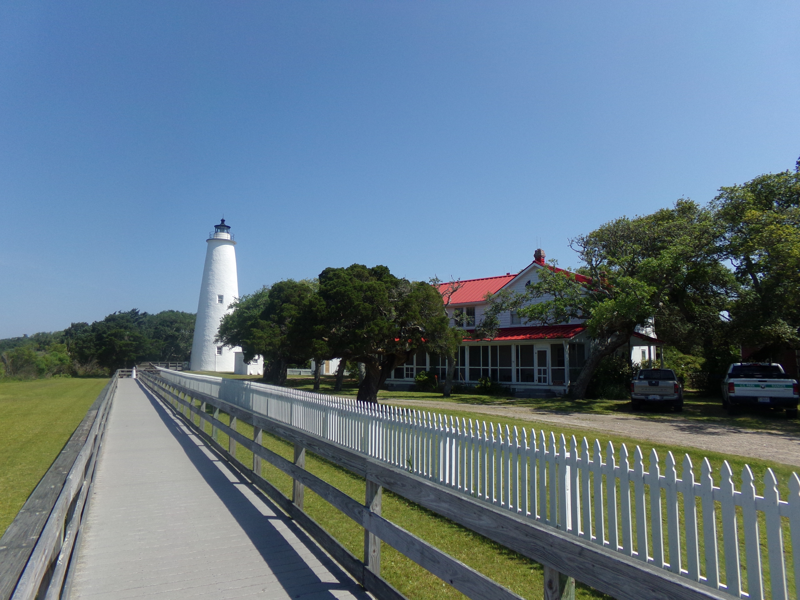
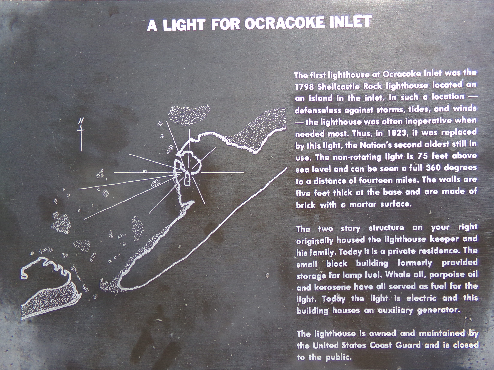
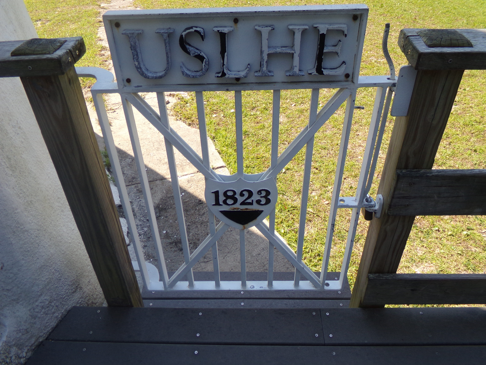
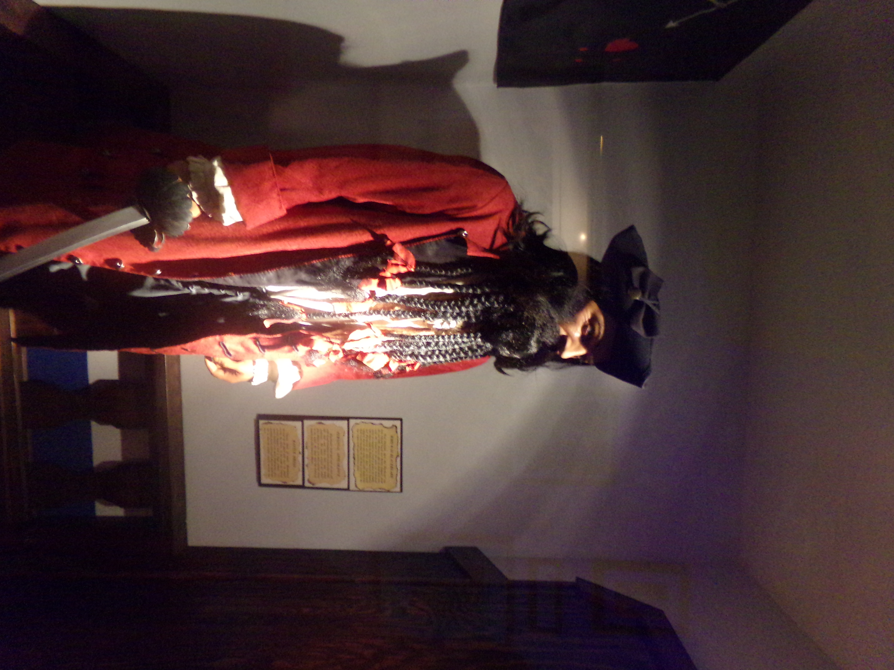
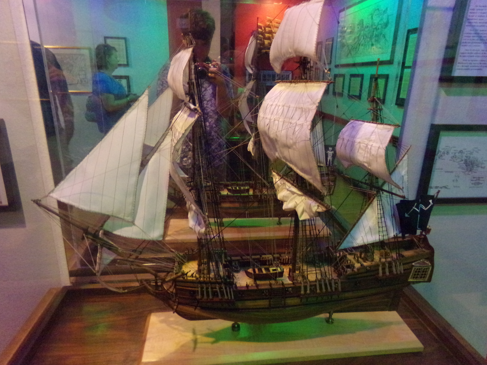
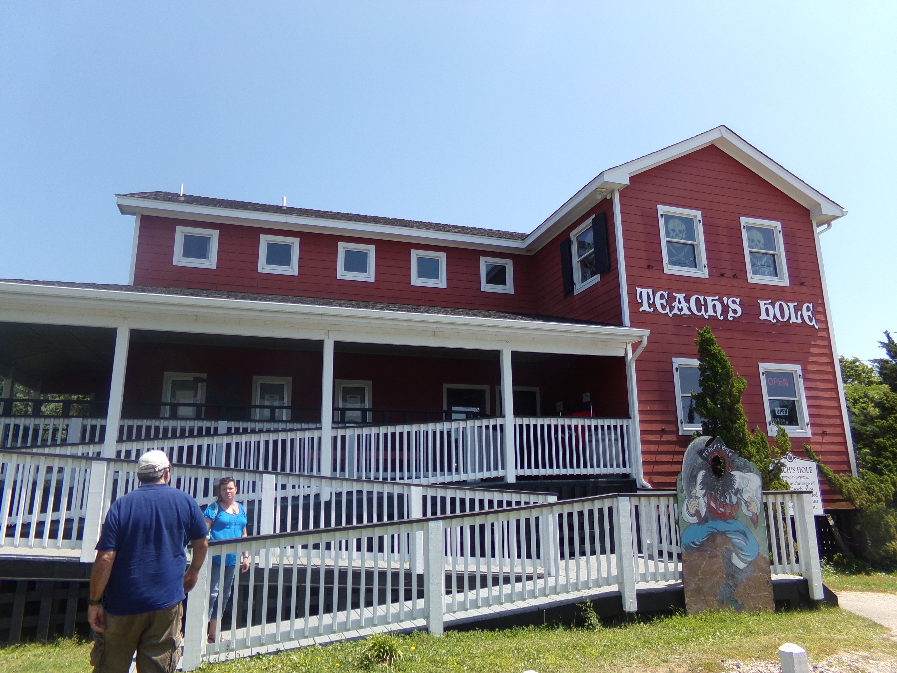

Ocracoke is maintained by the National Park Service.

During the Civil War, Confederate troops removed the Fresnel lens so the beacon could not help the Union Navy in navigation during the blockade of the coast.
Originally the Ocracoke lightouse was known as Shellcastle Rock Lighthouse. It was a wooden tower and was destroyed by fire in 1818.
Today, Ocracoke Island can be reached by ferry, where visitors can view the lighthouse and explore the surrounding town. A different kind of history took place here before the lighthouse was constructed. This island is famous for one notorious pirate, Blackbeard.The most famous pirate, Edward Teach, known as Blackbeard, made this area his residence in 1717.

A large and foreboding man, Blackbeard could instill fear in anyone who got in his way.
A model of the Queen Anne's Revenge which was purposefully scuttled by Blackbeard off the coast of Beaufort. Blackbeard and his crew would intercept merchant vessels coming through the Outer Banks and take what they wanted. The governor of North Carolina at that time just looked the other way and did not intervene.
by 1718, the merchants and people affected by these raids pleaded with the governor of Virginia to put a stop to it. He hired Captain Maynard to hunt down Blackbeard. Captain Maynard found Blackbeard and a ferocious battle between the two ended with Blackbeard's death at Teach's Hole in Ocracoke Inlet.